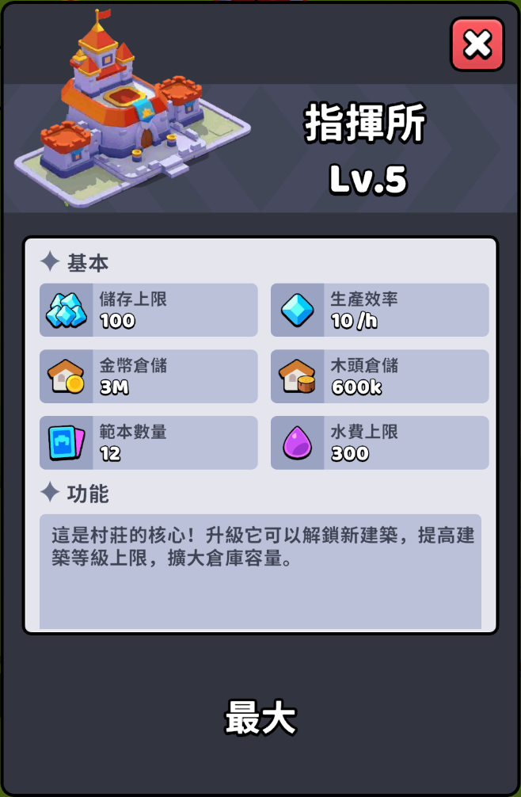
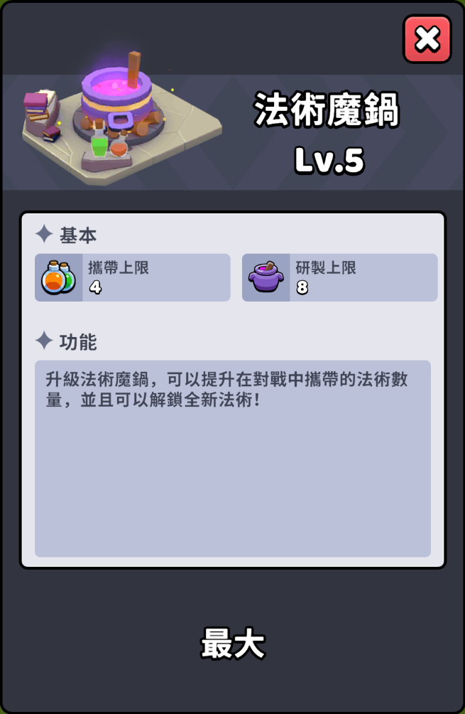
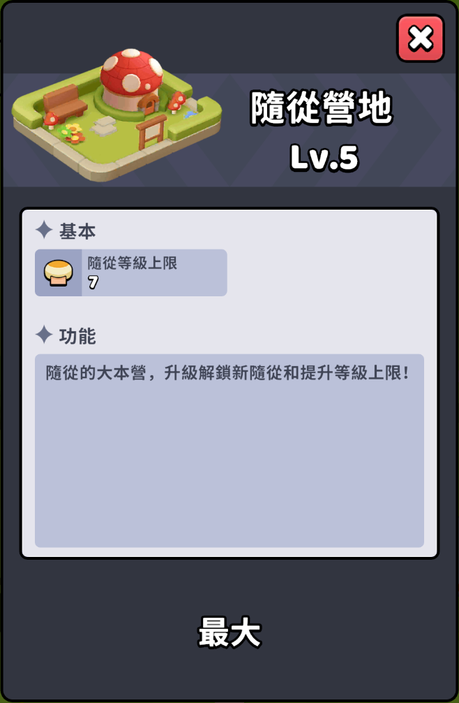

🏯 指揮所 (Command Post)
指揮所是村莊的核心建築。所有其他建築物的等級上限，皆取決於指揮所的等級。
💡 升級提示：4 級需 5 個傳奇單位，5 級需 5 個神話單位。

指揮所是村莊的核心建築。所有其他建築物的等級上限，皆取決於指揮所的等級。

解鎖競技場法術，擴大戰鬥攜帶與研製上限。治癒術 2 級解鎖，火球術 4 級解鎖。
每次升級使攜帶量增加 1 點，研製上限增加 2 點。

隨從系統核心。目前因系統尚未完全開放，建議優先度較低。建議在木頭資源充裕時再進行升級。

木頭資源產出

金幣資源產出


目前相關的升級數據、資源效率與機制仍在持續研究中。